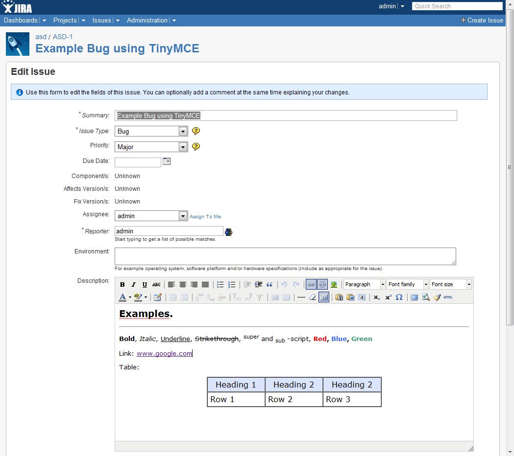
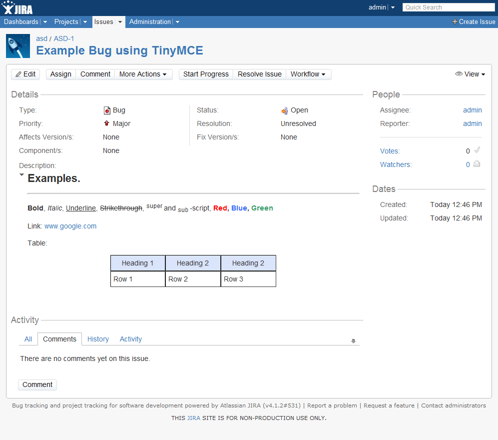
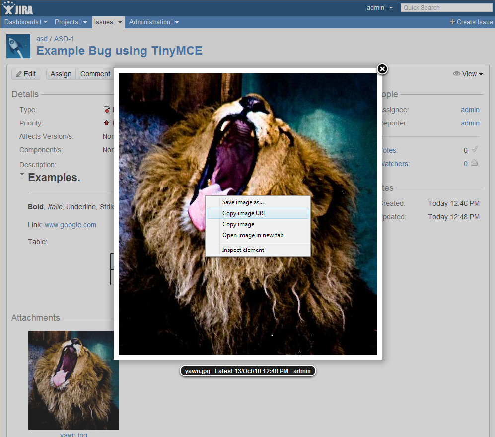
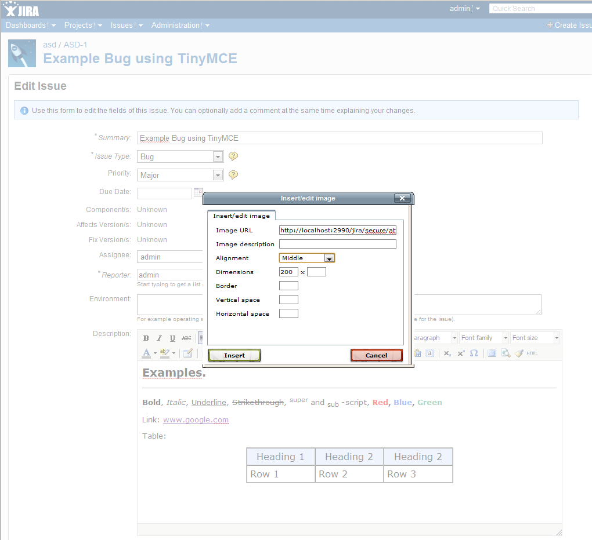
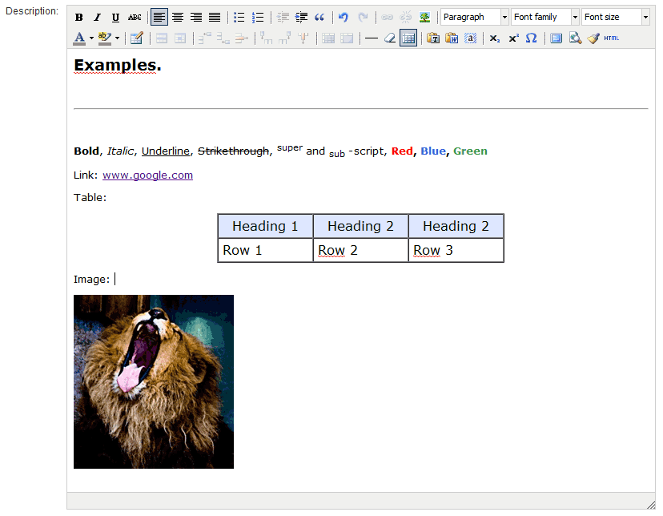
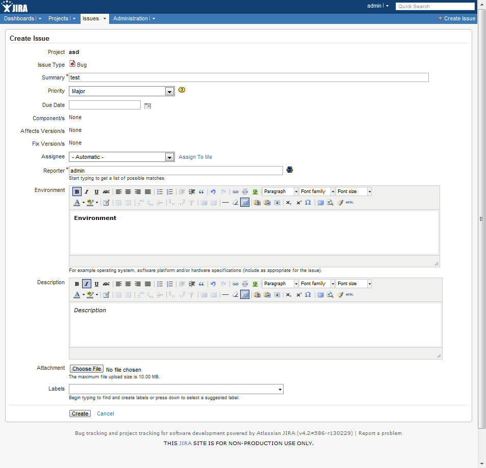

Description
Jira plugin that provides a wysiwyg textarea renderer using the
TinyMCE Editor.

Releases
Links
Install
- Copy the tinymce-renderer-plugin-xx.jar file to {JIRA_HOME}/plugins/installed-plugins
- Restart jira
- Ensure the html renderer option is enabled. As Administrator go to plugins, choose "Wiki Renderer Macros Plugin", and select "Enable" for the html option.
- Modify the renderer for the field you wish to use TinyMCE in. Example: As Administrator go to "Field Configurations", select "Configure", next to a text field select "Renderers", choose "TinyMCE Renderer"
Features / Limitations
Because this plugin scratches my itch only a few of the TinyMCE plugins and themes are available:
- The only theme used is advanced-default
- The following plugins are used:
-
- contextmenu
- fullscreen
- inlinepopups
- paste
- preview
- table
- The configuration options are modifiable but lie deep in the jar file structure: tinymce-renderer-plugin.jar\templates\plugins\renderers\tinymce\tinymce-renderer-edit.vm
- Buttons available:
-
- bold, italic, underline, strikethrough
- justifyleft, justifycenter, justifyright, justifyfull
- bullist, numlist
- outdent, indent, blockquote
- undo, redo
- link, unlink, image
- formatselect, fontselect, fontsizeselect
- forecolor, backcolor
- tablecontrols
- hr, removeformat, visualaid
- pastetext, pasteword, selectall
- sub, sup, charmap
- fullscreen, preview, cleanup, code
Usage Notes
The buttons in the Editor are pretty self-explanatory, and more information can be found on the TinyMCE site.
Editing a page
The rendered content

Adding an image
Images cannot be directly uploaded using the TinyMCE editor. Instead, upload the image to the issue, make a note of the URL, and use this in the image popup.



Multiple Renderers
Version 1.1 allows multiple renderers when editing an issue.

Support
This plugin is unsupported, I am releasing it in case it is useful for people. If the plugin is not working whatsoever I will try and find time to help resolve the issue. I do not currently plan on implementing more themes or mce-plugins, but will help as much as I can if you want to extend the plugin for your environment.
If you do encounter a problem, there is an issue tracker on github. Please be as specific as you can, and if possible include the following information:
- Browser + version
- Jira version
- Any relevant error messages in the error console of the browser
- If you have access, any relevant error messages in the atlassian-jira.log file on the server
Modifications to the TinyMCE Library
- tiny_mce_popup.js - modified to set the tinymce object which seemed to be not set when called within jira. Identified with comment: "Modified from the original by Gary Hodgson for Jira Plugin"
- themes/advanced/skins/default/dialog.css - prefixed all declarations with "tinymce_dialog"
- themes/advanced/skins/default/content.css - prefixed all declarations with "mceEditor"
- themes/advanced/*.htm - added explicit class attributes to body tags for theme css declarations (otherwise the jira css overrides the styles, for example: tabs and buttons) Perhaps there is a TinyMCE configuration item for this, but I couldn't find one that worked.
- plugins/table/*htm - as above.
License
BSD
Authors
Gary Hodgson (contact@garyhodgson.com)
Download
You can download this project in either zip or tar formats.
You can also clone the project with Git by running:
$ git clone git://github.com/garyhodgson/tinymce-renderer-plugin